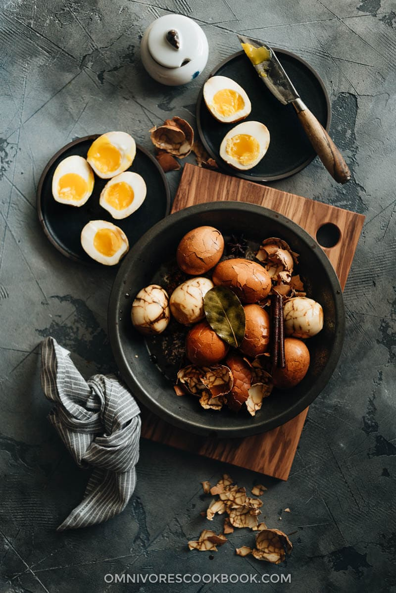

Chinese Tea Eggs

Make delicious hard boiled and soft boiled marbled tea eggs that are bursting with flavor
Chinese tea eggs were one of my favorite snacks growing up. Yes, while you might have been snacking on chips or cookies,
back in China, we snack on savory eggs. The tea eggs are so popular and you can find them everywhere - from a breakfast
street vendor who has a big pot of these eggs constantly ready on the side of her cart, or packaged peeled tea eggs at
Seven Eleven.
The tea eggs have a beautiful marbled surface. They are simmered in a savory liquid with star anise, cinnamon sticks,
Sichuan peppercorns, and black tea until soaked with the flavors of the spices and a refreshing tea fragrance.
Ingredients
- 12 large eggs
- 4 tbsp light soy sauce
- 4 tbsp dark soy sauce
- 2 bay leaves
- 1 tsp sichuan peppercorns
- 1 star anise
- 1 small cinnamon stick
- 2 tsp sugar
- 1 tsp salt
- 2 black tea bags
- 2 1/2 cups of water
Steps
- Mix all the marinade ingredients in a small pot. Cook over medium heat until bringing to a boil. Turn to medium-low heat.
Simmer for 10 minutes. Remove the pot from your stove and let cool completely. Once done, remove and discard the tea bags.
- To boil the eggs, heat a pot of water (enough to cover all the eggs) over high heat until boiling. Turn to low heat.
Carefully place the eggs in the pot using a ladle, to prevent the eggs from cracking.
- Boil 5 minutes for soft-boiled eggs, 7 minutes for medium eggs, or 10 minutes for hard-boiled eggs.
- While cooking the eggs, prepare an ice bath by combining ice and tap water in a big bowl.
- Once the eggs are cooked, immediately transfer them to the ice bath to cool for 2 to 3 minutes. If you don't have ice on
hand, simply run cool tap water over the eggs for a couple minutes until they cool down.
- Gently crack the eggs using the back of a spoon. You want to make sure the egg shells are cracked enough so the marinade will
reach the interior, without cracking the eggs apart (especially if you made soft boiled eggs). If you're in a hurry, you can
also peel the eggs and marinate them peeled. The eggs will be ready in 12 hours this way.